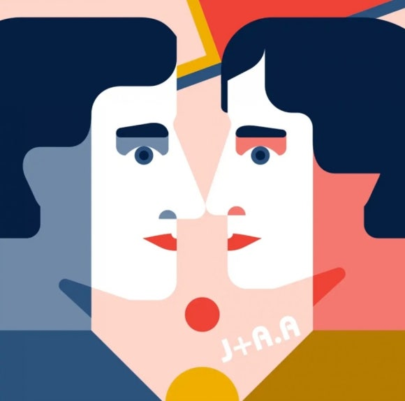

Design Gallery

A is for Anni and Josef Albers.
애니와 조셉 앨버스는 바우하우스의 베스트 커플이었다. 둘이서
모두 학생으로 들어와서 교수(매스터)까지 됐다. 조셉은 글래스워크숍,
애니는 직물워크숍 주임교수가 된다. 각각 기하학과 색상을 이용한
연구작들을 만들어낸다. 폐교후 미국으로 건너가 왕성한 작품활동을
하면서 교수생활도 병행한다.
F is for Furniture.
바우하우스에서는 20세기를 대표하는 가구들을
창조해냈다. 마르셀 브로이어 breuer 의 바실리체어,
조셉 하트윅 hartwig 의 체스세트 등은 기능에 충실한
미니멀리스트 디자인이었다. 당시의 현대적 재료와
테크닉을 이용하면서 대중에게 쉽게 다가서는 가구들
이었다.한편 미스 mies vdr 가 디자인 한 것 처럼
특정 건축물을 위해 만든 가구들도 있다. 바르셀로나
체어와 투겐트하트하우스에
사용된 가구들이 그렇다.
D is for Dessau.
데사우는 베를린에서 남서쪽으로 130km 정도 떨어져 있다.
1925년부터 1932년 까지 바우하우스의 보금자리였다.
바이마르에서 이전하면서 그로피우스가 설계하여 새 캠퍼스를 지었다.
유리커튼월을 적극적으로 사용한 철근콘크리트 건물 3개동과
연결브리지로 구성된 캠퍼스이다. 비대칭의 바람개비식으로 건물을 배치했다.
바우하우스 개교이념의 건축적 구현이었다.
K is for Peter Keler.
바우하우스의 학생이었던 피터
켈러는 매우 유능한 디자이너
이자 건축가였다.
1923년 바이마르에서 열린
바우하우스 최초의 전시회에서
요람을 출품하였다.
바실리 칸딘스키의 영향을 크게
받은 켈러의 요람은 기하학적인
형태에 원색을 사용했다.
U is for Universal.
허버트 베이어가 고안해낸 "유니버설"
글자체는 바우하우스만큼 이상적이어서
학교의 이미지와 거의 동일시되었다.
1925년에 둥근 글자체의 유니버설 알파벳을 고안해내기도 했다.
깔끔하고 모던한 글자체는 대문자와 꼬리(serif ; 세리프)가 없었다.
이유는 시간낭비라고 생각했기 때문이다.